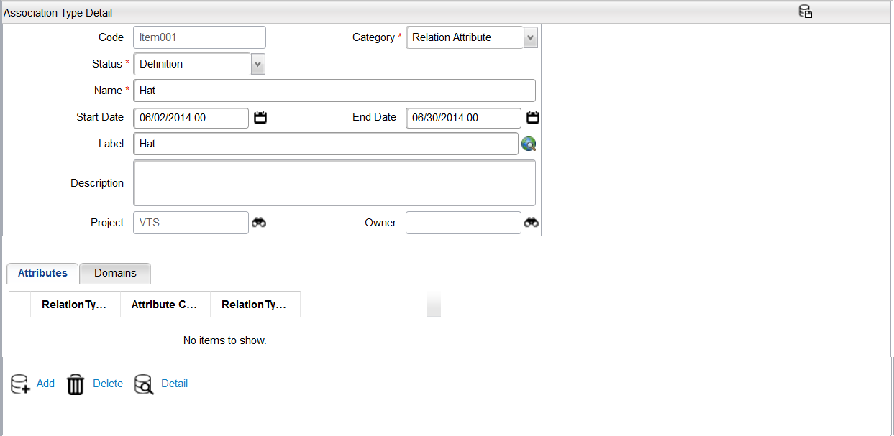
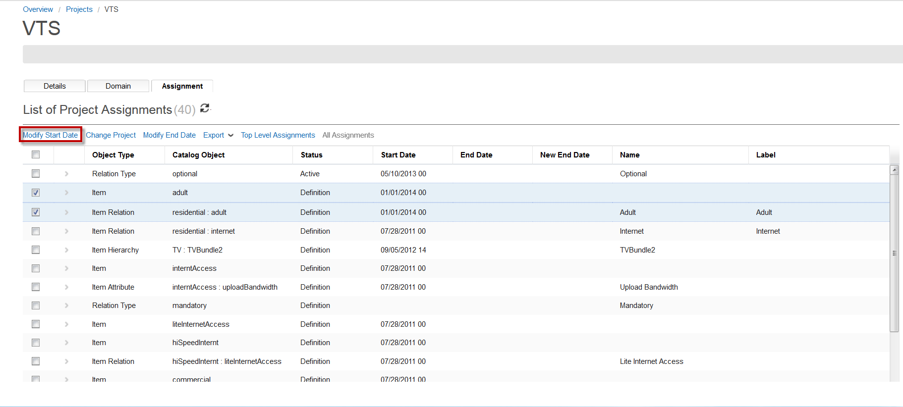
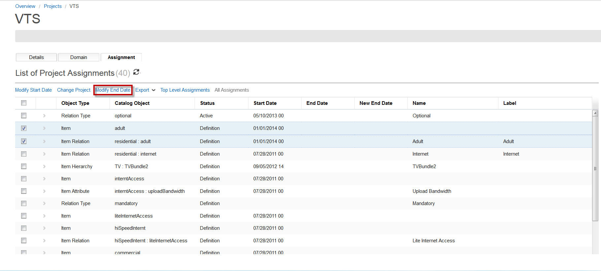

Start and End DatesAll catalog objects (versioned and non-versioned) have start and end dates. The versioned elements can have many instances with different start and end dates, but only the active instances for the current period are displayed in the user interface. The non-versioned elements (Attribute Types, Context Types and Association Types) can have only one instance with one start date and one end date. The start date and end date govern the availability of the items included in the Project. The start and end dates are not only formatted to have a date but also a timestamp. The format of the dates are as follows MM/dd/yyy HH where
The default catalog time unit is 24 hours, which means that the start date and time is converted to Catalog time based on the catalog time unit that is set. As an example, since the default is 24 hours, the start date of 19 Feb 2013 21:23 is converted to 19 Feb 2013 00:00. When it comes to the start date of different versions (that is, they have the same date, but different time), these versions are considered to have the same start date and time. As a result, the logic is to order the different versions based on the start date or time, and return the result based on the first version encountered for that Catalog time. The catalog time unit is stored in CWPRODUCTPROPERTIES table under the CTLG_TIME_UNIT key. If you do not find an existing key value in the table, you may have to insert a new one, as the default is taken as 24 if this value is not found in database. This key is measured in hours and can only have 1, 2, 3, 4, 6, 12, 24 as valid values. If any other value is set, the Catalog does not start and an error message appears in the application logs. Note: Reducing the value from 24 to another value may prompt some performance impacts. Before changing the time unit, ensure that all catalog nodes are shut down. Notes:
See Projects for information about project effective date. Change End DateTo change an object's end date, you can click the End Date field's button, specify the end date, and then click the Save button. to change the end date of a row in a grid. The following is an example of changing the end date for an assocation type.  Note: Some objects require that you click the Edit button first before you can make changes to the End Date field. Change Start Date of multiple objectsTo change the start date of multiple objects, follow these steps:
 Note: Change the Effective Date field to reflect the same start date for all objects related to a project. Change End date of multiple objectsYou can change the end date of multiple objects of a project. For example, project A has 200 objects and 75 active objects are end dated. When you need to change the end date of all of these active objects to the same date (when you activate the project A), you do not need to update the end date for each object one by one. To change the end date of multiple objects, follow these steps:
 Note: The Modify Start Date and Modify End Date buttons are available only if the project is open and it is not Active. Effect on Start and End Dates During Project ActivationWhen a project is activated, all start dates of all objects in the project are moved to be the same as the effective date of the project, if the start dates are prior to the project effective date. Also, at the time of activation, the project effective time must be set to at least one hour in the future. As such, a certain degree of planning is required as you develop catalog changes. As development for a particular release usually starts three months prior to deployment, at the time of activation, you should review all dates in the project and adjust them forward by approximately three months. |